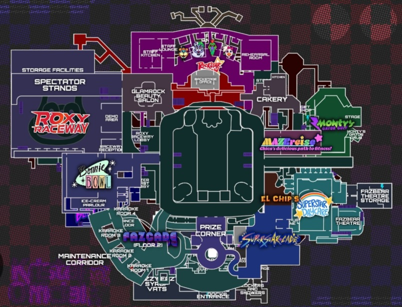

Five Nights At Freddy's: Security Breach
Five Nights at Freddy's: Security Breach è un videogioco survival horror
del 2021 sviluppato da Steel Wool Studios e pubblicato da ScottGames. È il nono capitolo principale della serie Five Nights at Freddy's e il
tredicesimo in generale, che si svolge dopo gli eventi di Five Nights at Freddy's: Help Wanted. A differenza degli altri titoli della serie,
il gioco prevede solo una notte invece di cinque. Ha ricevuto elogi per la sua grafica, per il gameplay free-roam mai visto prima nel
franchise, per la trama e per i suoi elementi horror.
Animatronics principali:
-
Glamrock Freddy:
è una nuova versione di Freddy Fazbear, che appare come un orso arancione nello stile punk anni '80. Egli è l'unico animatronic buono, che aiuterà Gregory fin dall'inizio del gioco. Freddy consentirà a Gregory di nascondersi nella sua cavità toracica per renderlo totalmente immune dagli attacchi dei nemici; tuttavia, se la batteria di Freddy si scaricherà, perderà il controllo e lo ucciderà. Per accedere a varie aree del Pizzaplex bisognerà aggiornare Freddy, montandogli addosso i pezzi degli animatronic;
-
Glamrock Chica:
è una nuova versione di Chica, la quale appare come una snella gallina bianca e rosa. Chica è il primo nemico che incontra Gregory e uno dei nemici più comuni in generale. Spesso può essere vista mentre si ciba di spazzatura e rottami vari. Una volta schiacciata sotto un compattatore di rifiuti, sarà possibile rubarle il suo sintetizzatore vocale; Chica si rialzerà, ma rimarrà muta;
-
Roxanne Wolf:
abbreviata in Roxy (che in questo gioco prende il posto di Foxy), è una lupa grigia dai lunghi capelli bianchi. Roxy è molto narcisista e parla sempre a sé stessa, facendosi dei complimenti da sola. Roxy è dotata di speciali occhi che le consentono di vedere attraverso le pareti. Roxy verrà colpita in pieno da un go-kart, questo consentirà a Gregory di rubarle gli occhi e di montarli a Freddy; Roxy diventerà cieca, ma sarà comunque in grado di percepire i movimenti di Gregory;
-
Montgomery Gator:
abbreviato in Monty (che in questo gioco prende il posto di Glamrock Bonnie dopo che è stato distrutto da non si sa chi), è un alligatore verde con una cresta da punk e indossa un paio di occhiali con lenti a stella. Ha un carattere molto irascibile ed è uno dei nemici più aggressivi, capace di sfondare cancelli di metallo, ma i suoi movimenti sono lenti. Monty viene affrontato all'interno del suo campo da minigolf, dove verrà spaccato in due dopo una caduta. Gregory prenderà le mani di Monty per darle a Freddy, con le quali sarà in grado di spezzare le catene che bloccano alcune porte. Nonostante la perdita delle gambe, Monty sarà comunque in grado di muoversi strisciando;
-
The Daycare Attendant:
è un animatronic umanoide con una doppia personalità. Quando le luci sono accese diventa Sole (anche detto Sun o Sundrop), che è amichevole, ma quando queste si spengono si trasforma in Luna (anche detto Moon o Moondrop) e diventa aggressivo. Questo animatronic viene incontrato per la prima volta all'interno del Nido e, dopo averlo affrontato, inizierà a seguire Gregory per tutto il Pizzaplex.
Trama:
Il bambino protagonista, Gregory, rimane intrappolato nel Freddy Fazbear's Mega Pizzaplex - una grande pizzeria futuristica incentrato sulle sue mascotte animatroniche, dopo che è stato chiuso per la notte. Vanessa, la guardia notturna della sicurezza, ordina a tutti gli animatronici e ai robot di cercare Gregory; tuttavia, Freddy ha un malfunzionamento tecnico, disobbedendo agli ordini di Vanessa e decidendo di aiutare Gregory a sopravvivere alla notte ed eludere gli altri animatronici, che stanno cercando di ucciderlo, fino a quando le porte di uscita non si riaprono alle 6:00 dandogli un Faz-Watch come mezzo di comunicazione. Dopo essere stato inseguito da Chica, Monty e Roxy, Gregory si chiude in un ufficio di sicurezza dove deve fuggire di nascosto senza essere catturato. Nel tentativo di ottenere badge di sicurezza di alto livello per accedere ad alcune aree del centro commerciale, Gregory entra nell'asilo nido del centro commerciale, assistito da un amichevole animatronic di nome Sun. Gregory attiva accidentalmente un'interruzione di corrente, provocando la trasformazione di Sun nella sua controparte malvagia, Moon, che ora dà la caccia anche lui a Gregory. Gregory viene infine trovato da Vanessa e confinato in una stanza fino all'arrivo della polizia. Improvvisamente, Vanny si avvicina a lui, rendendo sempre più distorta la sua visione come se avesse abilità soprannaturali. Gregory fugge attraverso le prese d'aria e viene incaricato da Freddy attraverso il suo orologio di salvarlo mentre ha esaurito la batteria. I due si avventurano nel seminterrato, dove Moon tende loro un'imboscata e cattura Freddy. Il bambino procede nel seminterrato, scoprendo che Freddy è trattenuto per essere interrogato da Vanessa su dove si trovi Gregory. Vanessa afferma che non c'è traccia di lui nel database del centro commerciale, il che significa che non può essere restituito ai suoi genitori e che, se trovato, il suo destino sarebbe sconosciuto. Dopo aver liberato Freddy, Gregory deve affrontare Monty per prendergli gli artigli: dopo aver vinto, viene inseguito da un gigantesco animatronic a forma di ragno, DJ Music Man. Quindi combatte contro Roxy, prendendole con forza gli occhi. Aggiorna Freddy usando gli artigli di Monty e gli occhi di Roxy, e poi schiaccia Chica per ottenere il suo voice box, eliminando quasi tutte le sue minacce. Arrivano le 6:00 e le porte si aprono, ma Vanessa trasmette un messaggio in cui chiede a Gregory di incontrarla per una ricompensa. Gregory ha la possibilità di lasciare il mega pizzaplex, incontrarsi con Vanessa per la sua ricompensa, o combattere Vanny. Questo è il gioco del franchise con più finali, avendone 6 in tutto.
Gameplay:
Il giocatore prende il controllo di un giovane ragazzo di nome Gregory, che è rinchiuso in un grande centro commerciale pieno di animatronic assassini e deve completare numerose missioni per sopravvivere tutta la notte per poter fuggire. Gregory può nascondersi per evitare i nemici o utilizzare dei diversivi per distrarli. Correre drena la resistenza e, se è scarica, Gregory non sarà in grado di muoversi velocemente per un po'. Alcuni scontri richiederanno l'uso di strategia per evitare di essere scoperti. Gregory ha una torcia che può usare per vedere in luoghi bui e porta un dispositivo chiamato "Faz-Watch" al polso, dove può accedere alle missioni, al sistema di telecamere e alla sua posizione nel centro commerciale. Tuttavia, la torcia ha una potenza limitata e devono essere ricaricati frequentemente. Ci sono anche due tipi di armi che possono essere usate per stordire temporaneamente i nemici: la "Faz-Cam" e il "Fazblaster". La Faz-Cam può stordire tutti i nemici di fronte al giocatore, ma può essere utilizzata solo una volta per carica. Il Fazblaster può invece stordire i nemici se colpiti solo agli occhi, ma ha più colpi a disposizione prima di dover ricaricare. Freddy è l'unico animatronic che aiuterà Gregory nel gioco ed ha uno scompartimento nello stomaco in cui Gregory può nascondersi. Mentre è all'interno di Freddy, il bambino può vedere attraverso i suoi occhi e può usarlo per superare altri animatronic senza problemi. Tuttavia, Freddy ha una carica della batteria limitata e, se ha poca potenza, dovrà ricaricarsi in una stazione di ricarica, altrimenti attaccherà Gregory se si trova al suo interno mentre la batteria è scarica. Freddy può anche dare a Gregory consigli, scorciatoie o avvertimenti sulle sfide e sui nemici che dovrà affrontare nel centro commerciale.
Potenziamenti e Items:
Potenziamenti del giocatore:
- Flashlight Battery Upgrades: nel gioco sono presenti 3 potenziamenti di questo tipo e la loro funzione è quella di aumentare la batteria della torcia elettrica del giocatore;
- Fizzy Faz Drinks: nel gioco sono presenti 4 potenziamenti di questo tipo e servono ad aumentare la stamina del protagonista cosicché possa correre più a lungo;
- Freddy Upgrades: nel gioco sono presenti 2 potenziamenti di questo tipo e servono ad aumentare la batteria di Freddy;
- Shoes: nel gioco c'è solo presente un potenziamento di questo tipo e serve ad aumentare la velocità di corsa;
- Hoodie: nel gioco c'è solo presente un potenziamento di questo tipo e serve ad aumentare la furtività del protagonista.
Upgrades di Freddy:
- artigli di Monty: servono per distruggere delle grate che solo Monty può distruggere, si ottengono dopo aver affrontato Monty;
- occhi di Roxy: servono per avere una vista x-ray e si ottengono dopo aver affrontato Roxy;
- voicebox di Chica: servono per aprire delle grate tramite l'urlo prodotto dal voicebox, si ottiene dopo aver affrontato Chica.
Armi del giocatore:
- Faz-Watch: la prima "arma" del gioco, serve a controllare le telecamere e per altri utilizzi come chiamare Freddy, vedere la mappa, vedere le missioni e vedere i messaggi;
- Faz-Cam: è una camera stile polaroid, emette un flash che abbagliare i nemici per molti secondi, ha solo un utilizzo e si ricarica col tempo o con la stazione di ricarica dove si ricaricano le torcie;
- Fazerblaster: è una pistola laser che serve per acciecare i vari nemici per alcuni secondi, ha 6 colpi e si ricarica tramite la stazione di ricarica dove si ricaricano le torcie.
Mappa:

Per altre informazioni puoi visitare il seguente link:
Wiki